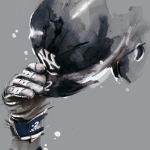
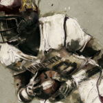

time
Since time, and his predestinated end

hopeful
Abridged the circuit of his hopeful days

virtue
Whiles both his youth and virtue did intend

endeavors
The good endeavors of deserving praise

monument
What memorable monument can last

name
Whereon to build his never-blemished name

life was graced
But his own worth, wherein his life was graced
- 
the same
Sith as that ever he maintained the same?

oblivion
Oblivion in the darkest day to come

sin shall tread
When sin shall tread on merit in the dust

lamentable tomb
Cannot rase out the lamentable tomb

short-lived deserts
Of his short-lived deserts; but still they must

hearts and memories
Even in the hearts and memories of men

respect
Claim fit respect, that they, in every limb

comfort
Remembering what he was, with comfort then

pattern
May pattern out one truly good, by him

truly good
For he was truly good, if honest care

harmless conversation
Of harmless conversation may commend

recompensed
Ill recompensed only in his end
- 
tongue
Nor can the tongue of him who loved him least

superlative
To one superlative above the rest

steady faith
Of many men in steady faith reprove

constant temper
His constant temper, in the equal weight

thankfulness
Of thankfulness and kindness: Truth doth leave

proof
Sufficient proof, he was in every right
thankful
As kind to give, as thankful to receive.

curious eye
The curious eye of a quick-brained survey

scantly find
Could scantly find a mote amidst the sun
too-shortened days
Of his too-shortened days, or make a prey

faulty errors
Of any faulty errors he had done

spleenful sense
Not that he was above the spleenful sense

spite of malice
And spite of malice, but for that he had

innocence
Warrant enough in his own innocence

nature
Against the sting of some in nature bad

absolutely blest
Yet who is he so absolutely blest

mortal frame
That lives encompassed in a mortal frame